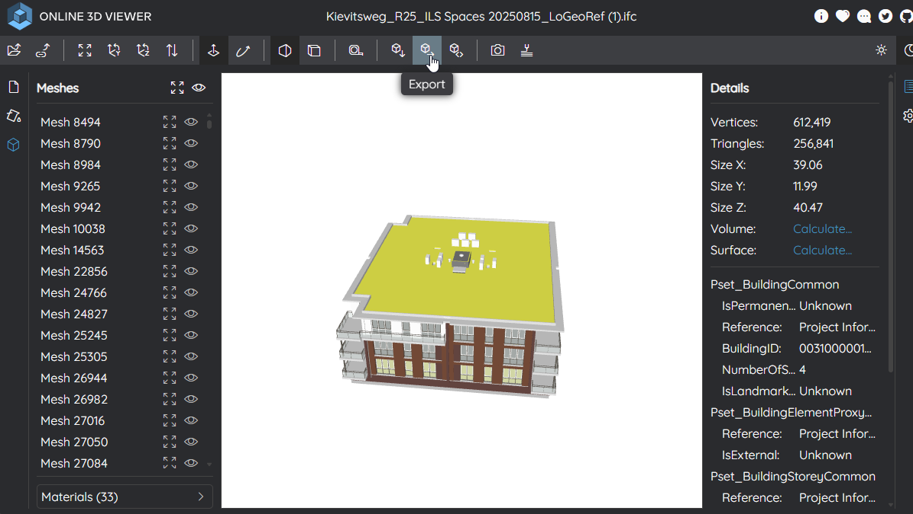
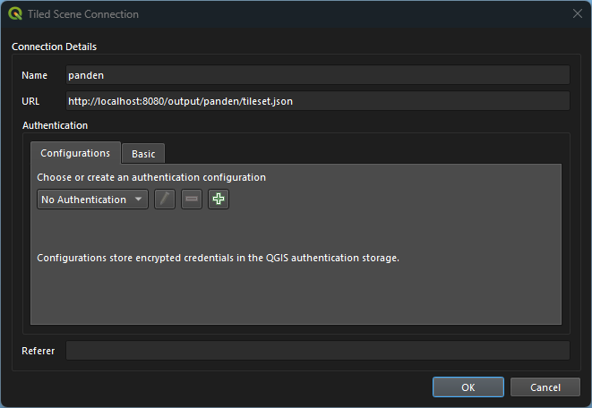
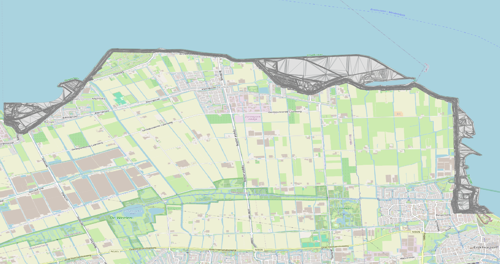
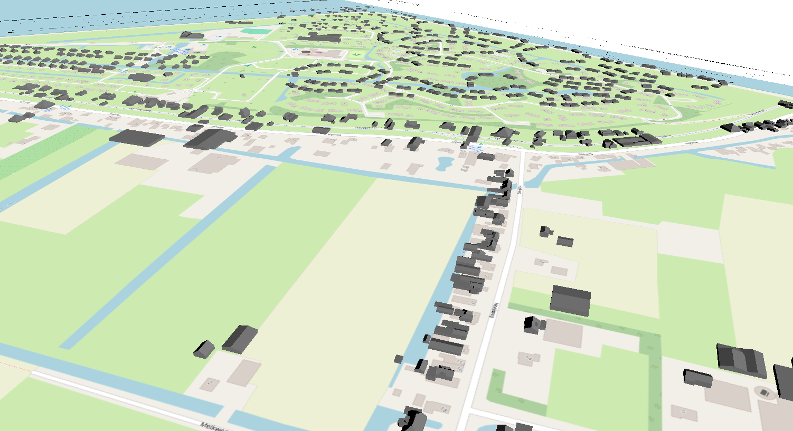

Geef je data diepte:
van 2D naar 3D met OS tools
· Workshop 3D Tiles ·
Na deze workshop
- Heb je kennis van de 3D Tiles-standaard
- Kun je 3D-tilesets maken uit 2D data
- Kun je een 3D-tileset inladen in een CesiumJS-webomgeving
- Zijn de mogelijkheden voor datavisualisatie met CesiumJS bekend
Benodigdheden
- Laptop met internetverbinding
- Docker
- QGIS 3.40 of hoger
Programma
- Introductie 3D Tiles
- 3D Bag Panden omzetten naar 3D Tiles
- Data downloaden en importeren
- Data voorbereiden
- 3D Tiles maken
- 3D Tiles valideren
- 3D Tiles visualiseren
- Deel 2: Datavisualisatie in 3D
- 3D tilesets inladen
- Tileset stijl aanpassen
- 3D modellen toevoegen
- PDOK 3D Basisvoorziening
- 3D Tiles in QGIS inladen
Workshop workflow
3D Tiles: een OGC standaard
- Open standaard voor het visualiseren van (grote hoeveelheden) 3D geodata op het web
- Ontwikkeld door Cesium en gestandaardiseerd door OGC
- Hiërarchische datastructuur (spatial tiling)
- Ondersteunt verschillende formaten:
- Batched 3D Models (b3dm)
- Instanced 3D Models (i3dm)
- Point Clouds (pnts)
- Composite (cmpt)

Zie voor een gedetailleerd overzicht van de 3D Tiles specificatie: 3D Tiles Reference Card
Waarom zijn 3D Tiles nuttig?
- Optimalisatie voor grote datasets
- Alleen de noodzakelijke data wordt ingeladen
- Level of Detail (LOD) mechanisme
- Interoperabiliteit
- Open standaard
- Ondersteund door verschillende viewers (Cesium, ArcGIS, QGIS, Unity3D, Unreal)
- Streaming van 3D content
- Progressief laden van data
- Efficiënt voor web-based toepassingen
- Styling mogelijkheden
- 3D Tiles Styling Language
Aan de slag!
- Casus: Proefpolderdijk bij Andijk
-
Data:
- De BAG voor gebouwen
-
Toevoegingen
- Windturbine 3D model (geanimeerd)
- Boom 3D model
- 3D Basisvoorziening van PDOK
- IFC model van een gebouw

Docker omgeving
Let op: Controleer dat Docker (https://docs.docker.com/get-started/) is geïnstalleerd en draait voordat je verder gaat.
docker ps
Om de Docker omgeving op te starten zijn er twee bestanden nodig: docker-compose.yml en Dockerfile. Deze bestanden staan in de repository van de workshop.
Kopieer deze bestanden naar een lege directory op je lokale machine, bijvoorbeeld c:\3dtiles-workshop. Een makkelijke
manier om dit te doen is click rechtermuis op de link en kies 'Save link as...'
Tip: Een alternatieve manier om de twee bestanden op te halen is de gehele repository te clonen via 'git clone'
Open een terminal (cmd, PowerShell of Git Bash) en ga naar de directory waar je de bestanden hebt opgeslagen
Tip: Voor ARM64 gebruik docker-compose-arm64.yml en Dockerfile-arm64
Workspace opzetten met Docker
Voor het opzetten van de workspace run het volgende commando vanuit de
directory waar de bestanden docker-compose.yml en Dockerfile staan:
docker compose up -d
Er worden 2 containers gestart:
postgis: een PostgreSQL database met PostGIS extensieworkspace: een container met daarin alle benodigde tools geïnstalleerd (alpine)
De twee containers draaien in een apart netwerk en kunnen met elkaar communiceren. De database is vanaf de host machine
bereikbaar via poort 5439, de workspace container is bereikbaar via poort 8080 (voor de webserver die we later gaan gebruiken).
Tip:Voor ARM64 gebruik:
docker compose -f docker-compose-arm64.yml up -d Tip: Gebruik het commando docker compose down om de containers
te stoppen en te verwijderen.
Docker containers

QGIS connectie met database
Gebruik username: postgres | password: postgres


Verbinding maken met workspace
-
Gebruik het volgende commando om een shell verbinding te maken met de workspace container:
docker exec -it workspace bash -
Je komt nu in directory
/workspaceterecht. Deze map is via een volume mapping direct verbonden met de./containermap op je lokale machine. Alle bestanden die je in./containerzet zijn ook beschikbaar in/workspace, en andersom.

Tip: Gebruik het commando exit of Ctrl + D om de
verbinding met de container te verbreken.
3D Bag Panden van 3D Tiles
In dit deel gaan we:
- 3D Bag panden downloaden en importeren
- 3D Tiles maken van 3D Bag panden
- Tileset valideren
- Tileset visualiseren
Tip: Zie folder 'resultaten' voor al aangemaakte tilesets
3D Bag downloaden en importeren
- Ga naar site https://3dbag.nl/en/download en klik op knop 'Pick a tile'. Selecteer het kaartblad waar Andijk in ligt (kaartblad 8-512-888), Click 'Confirm Selection' en download de BAG data (GeoPackage formaat).
- Download de data (8-512-888.gpkg) en plaats in
./containerfolder. - Bekijk de inhoud met GDAL (vanuit je container shell):
ogrinfo 8-512-888.gpkgDe GeoPackage bevat 7 lagen, we gebuiken nu alleen lod22_3d:
- lod12_3d (3D Multi Polygon)
- lod12_2d (Polygon)
- lod13_3d (3D Multi Polygon)
- lod13_2d (Polygon)
- lod22_3d (3D Multi Polygon)
- lod22_2d (Polygon)
- pand (Polygon)
Vraag: wat is de projectie van de bestanden?

Data importeren in PostgreSQL
Nu gaan we de 3D Bag inladen in de database. Run de volgende commando's vanuit de shell container.
ogr2ogr -f "PostgreSQL" PG: 8-512-888.gpkg lod22_3d -nln public.panden_andijk -nlt MULTIPOLYGONZMaak spatial index aan::
psql -c "CREATE INDEX ON public.panden_andijk USING gist(st_centroid(st_envelope(geom)));" Controleer of de data goed geladen is (990 panden):
psql -c "SELECT count(*) from public.panden_andijk;"3D Tiles maken van 3D Bag Panden
pg2b3dm --connection "Host=postgis" -t public.panden_andijk -a identificatie -o ./output/panden -c geom --create_gltf falseResultaat: een tileset.json bestand en een directory 'content' met de 3D tiles in b3dm formaat.

Tilesets valideren
Valideer de tileset met de 3d-tiles-validator (in de Docker container):
3d-tiles-validator --tilesetFile ./output/panden/tileset.jsonResultaat: een validatie rapport in de terminal. Er mogen geen errors zijn, warnings kunnen worden genegeerd.
Validating tileset ./output/panden/tileset.json
Validation result:
{
"date": "2026-03-30T13:47:10.266Z",
"numErrors": 0,
"numWarnings": 0,
"numInfos": 0
}
Tilesets visualiseren - webserver opzetten
Er is een webserver geïnstalleerd in de docker container. De webserver serveert alle files uit de
/workspace folder. De server draait standaard op poort 8080.
Start de server:
http-server3D Tiles bekijken in een CesiumJS Viewer
We gaan nu de CesiumJS Viewer gebruiken om de 3D Tiles te bekijken.
Kopieer index.html naar de container folder. Deze index.html pagina bevat Javascript code die met behulp van de CesiumJS library 3D data inlaadt.
In de code worden 4 tilesets geladen:
- PDOK achtergrondkaart (grijs)
- PDOK quantized mesh terrein model
- 3D Bag panden
Open een browser en ga naar http://localhost:8080

Deel 2: Datavisualisatie in 3D
In dit deel gaan we:
- Een webserver opzetten
- 3D Tiles inladen in Cesium Viewer
- Tileset stijlen aanpassen
- 3D modellen toevoegen
- 3D Basisvoorziening gebruiken
- 3D Tiles in QGIS inladen
Tileset stijlen aanpassen
Styling kan worden toegepast op twee manieren:
- Tijdens het genereren van de tileset
- Tijdens het visualiseren in de client
In index.html, voeg de volgende code toe voor het aanpassen van de style van DTB vlakken tijdens visualisatie:
Tip: Voeg code toe onder regel '// todo: voeg hier code toe'
tilesetDtbVlakken.style = new Cesium.Cesium3DTileStyle({
color: {
conditions: [
["${feature['osmchr']} === 'Bitumen'", "color('#430719')"],
["${feature['omschr']} === 'Steen bekleding'", "color('#740320')"],
["${feature['omschr']} === 'Bomen en struiken'", "color('#008000')"],
["${feature['omschr']} === 'Industrieterrein'", "color('#FFFF00')"]
// todo: add more conditions
]
}
});Opdracht: maak features waar omschr === 'Meer' blauw (code #0000FF).
3D modellen toevoegen
Kopieer windturbine.glb naar de container directory.
Voeg de volgende code toe aan index.html
const windturbine = viewer.entities.add({
position: Cesium.Cartesian3.fromDegrees(5.193486,52.754867),
model: {
uri: "windturbine.glb"
},
});
3D Basisvoorziening
In de 3D Basis voorziening van PDOK zijn landelijke 3D Tilesets beschikbaar.
Voeg de 3D gebouwen tileset toe aan de Cesium Viewer:
const tileset3DGebouwen = await Cesium.Cesium3DTileset.fromUrl(
"https://api.pdok.nl/kadaster/3d-basisvoorziening/ogc/v1_0/collections/gebouwen/3dtiles"
);
viewer.scene.primitives.add(tileset3DGebouwen);Tip: Voor 3D LoD2.2 gebouwen gebruik https://data.3dbag.nl/v20250903/cesium3dtiles/lod22/tileset.json
Conversie IFC naar GLB
Ga naar site https://3dviewer.net/#model=https://geonovum.github.io/GeoBIM_Georefereren/data/Kievitsweg_R25_ILS%20Spaces%2020250815_LoGeoRef.ifc en klik op know 'Export'. Kies export naar GLB.

Voeg IFC model toe
Plaats model.glb in container folder
Voeg toe aan Cesium Viewer:
viewer.entities.add({
position: Cesium.Cartesian3.fromDegrees(5.194139,52.753524),
model: {
uri: "model.glb",
heightReference: Cesium.HeightReference.CLAMP_TO_GROUND
},
});
Tip: Gebruik HeightReference.CLAMP_TO_GROUND om het model op het terrein te plaatsen.
Tip: Het IFC model wordt geplaatst in de buurt van de windturbine
Tip: Element 'IfcSite' in de IFC file kan worden gebruikt om de juiste locatie van het model te definiëren.
Vraag: Wat zijn de beperkingen van deze aanpak?
QGIS 3D Tiles
- Open QGIS en ga naar 'Layer' -> 'Data Source Manager' -> 'Scene'
- Zet 'Source Type' op 'Service'
- Maak een nieuwe connectie aan via 'New' -> 'New Cesium 3D Tiles Connection'
- Name: panden
- URL: http://localhost:8080/output/bag3d/tileset.json

QGIS 3D Tiles visualisatie
2D weergave in QGIS:

Vraag: Waarom bestaan alle panden uit driehoeken?
QGIS 3D Tiles visualisatie
3D weergave in QGIS (via Views -> 3D Map Views -> Create new 3D Map View)

Wat valt er op aan de 3D View in QGIS?
Cleanup na de workshop
Voer de volgende commando's uit om de Docker containers te stoppen en te verwijderen:
docker compose downVerwijder docker images:
docker rmi 3dtiles_workshop-workspacedocker rmi postgis/postgisVerwijder database data:
docker volume rm 3dtiles_workshop_postgis_dataAfsluiting
Wat hebben we geleerd?
- Kennis van de 3D Tiles-standaard
- Inzicht in de software en technieken voor het maken van 3D-tilesets
- Een 3D-tileset laden in een webomgeving en in QGIS
- Mogelijkheden voor datavisualisatie met CesiumJS
Bronnen en links
- 3D Tiles specificatie
- 3D Tiles Reference Card
- pg2b3dm - Tool voor het maken van b3dm tilesets
- i3dm.export - Tool voor het maken van i3dm tilesets
- 3D Tiles Validator
- CesiumJS
- PDOK 3D Basisvoorziening